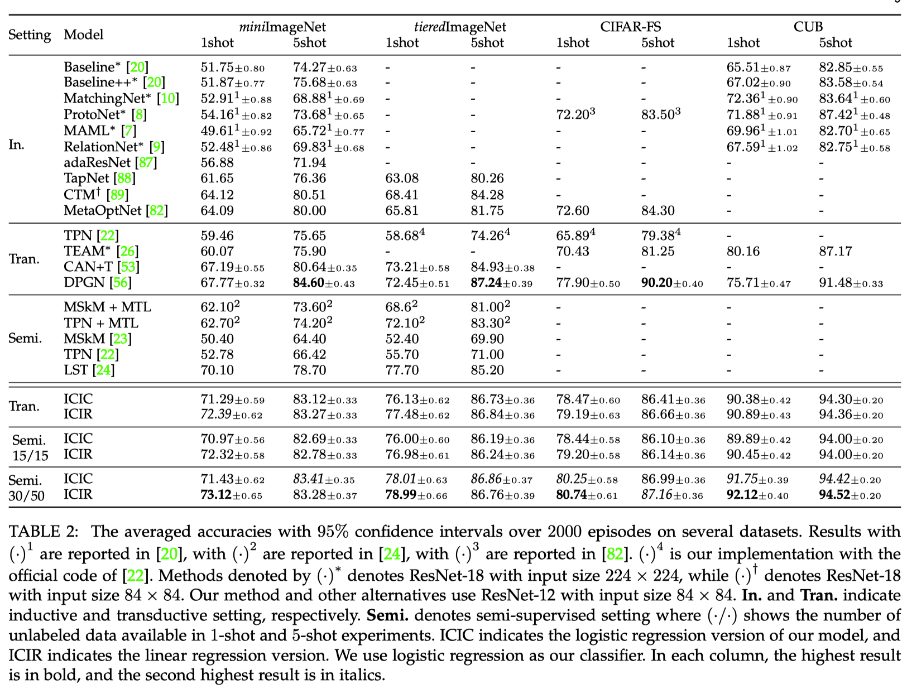

Instance Credibility Inference
[Papers:CVPR20,TPAMI extension] [code] [bib]
@inproceedings{wang2020instance,
title={Instance Credibility Inference for Few-Shot Learning},
author={Wang, Yikai and Xu, Chengming and Liu, Chen and Zhang, Li and Fu, Yanwei},
booktitle={Proceedings of the IEEE Conference on Computer Vision and Pattern Recognition},
year={2020}
}
@article{wang2021trust,
title={How to Trust Unlabeled Data? Instance Credibility Inference for Few-Shot Learning},
author={Wang, Yikai and Zhang, Li and Yao, Yuan and Fu, Yanwei},
journal={IEEE Transactions on Pattern Analysis and Machine Intelligence},
year={2021},
doi={10.1109/TPAMI.2021.3086140}}
Abstract
ICI is a statistical method for measuring the credibility of pseudo-labeled instances, to improve the performance of few-shot learning with theoretical guarantees.
- The algorithm iteratively selects the pseudo-labeled instances according to its credibility measured by the proposed ICI for classifier training.
- We solve the regularization path of LM/GLM with incidental parameter and regard the sparsity level as the credibility for each pseudo-labeled instance.
- Under the conditions of restricted eigenvalue, irrepresentability, and large error, our method will collect all the correctly-predicted pseudo-labeled instances.
ICI in 1 minute
Framework
This figure illustrate the inference process of our proposed framework. We extract features of each labeled and unlabeled instance, train a linear classifier with the support set, provide pseudo-label for the unlabeled instances, and use ICI to select the most trustworthy subset to expand the support set. This process is repeated until all the unlabeled data are included in the support set.
Methodology
Linear regression case
The linear regression model with incidental parameter is expressed as \[y_i=x_i^{\top}\beta+\gamma_i+\varepsilon_i\] where the data-dependent \(\gamma_i\) is considered as a metric of the credibility of the corresponding pseudo-labeled instance. The larger of \(\Vert \gamma_i \Vert \), the more difficult it is for the model to fit the instance.
Our optimization problem is as follows \[(\hat{\beta},\hat{\gamma})=\underset{\beta,\gamma}{\mathrm{argmin}}\Vert Y-X\beta-\gamma\Vert_\mathrm{F}^2+\lambda R(\gamma)\] By finding the closed-form solution of \(\beta\) with respect to \(\gamma\), we can transform the problem into \[\underset{\gamma}{\mathrm{argmin}}\left\Vert \tilde{Y}-\tilde{X}\gamma\right\Vert_\mathrm{F}^2+\lambda R\left(\gamma\right)\] with some variable substitutions. Then we can solve the regularization path of \(\gamma\) to get the sparsity level of each instance.
Logistic regression case
The logistic regression model with incidental parameters can be formed as \[y_{i,c} = \dfrac{\exp(x_{i,\cdot} \beta_{\cdot,c}+\gamma_{i,c})}{\sum_{l=1}^C\exp(x_{i,\cdot}\beta_{\cdot,l}+\gamma_{i,l})} + \varepsilon_{i,c}\] We can reformulate it into a standard logistic regression model by setting \[\bar{X}=(X,I),\bar{\beta}=(\beta,\gamma)^\top\] Our optimization problem is as follows \[\underset{\bar{\beta}=(\beta,\gamma)^\top}{\mathrm{argmin}} - \frac{1}{n} \sum_{i=1}^N (\sum_{l=1}^C Y_{i,l}(\bar{X}_{i,\cdot}\bar{\beta}_{\cdot,l})-\log(\sum_{l=1}^C\exp(\bar{X}_{i,\cdot}\bar{\beta}_{\cdot,l}))) + \lambda_1 R(\beta) + \lambda_2 R(\gamma).\]
Regularization path
We regard \(\hat{\gamma}\) as a function of \(\lambda\). When \(\lambda\) changes from \(0\) to \(\infty\), the sparsity of \(\hat{\gamma}\) is increased until all of its elements are forced to vanish. Further, we use the penalty \(R(\gamma)\) to encourage \(\gamma\) vanishes row by row, i.e., instance by instance. For example, \(R(\gamma)=\sum_{i=1}^n\sum_{j=1}^c|\gamma_{i,j}|\) or \(R(\gamma)=\sum_{i=1}^n\Vert\gamma_{i}\Vert_2\). Moreover, the penalty tends to vanish the subset of \(\tilde{X}\) with the lowest deviations, indicating less discrepancy between the prediction and the ground truth. Hence we could rank the pseudo-labeled data by the smallest \(\lambda\) value when the corresponding \(\hat{\gamma}_i\) vanishes.
Identifiability of ICI
We provide a theory for identifiability of ICI with linear regression model based on the model selection consistency for a linear regression model with \(\ell_1\) sparsity regularization. Assume \(\varepsilon\) is zero-mean sub-Gaussian noise. We give three assumptions:
- (C1: Restricted eigenvalue) \[\lambda_{\min }\left(\tilde{U}_{S}^{\top} \tilde{U}_{S}\right)=C_{\min }>0.\]
- (C2: Irrepresentability) \(\exists\ \eta\in\left(0,1\right]\), \[\|\tilde{U}_{S^{c}}^{\top} \tilde{U}_{S}(\tilde{U}_{S}^{\top} \tilde{U}_{S})^{-1} \|_{\infty} \leq 1-\eta. \]
- (C3: Large error) \[\min _{i \in S}|\vec{\gamma}_{i}^{*}|> h(\lambda, \eta, \tilde{U}, \vec{\gamma}^{*})\]
- If C1 and C2 hold, the wrong-predicted instances indicated by ICI has no false positive error, i.e., \(\hat{S}\subseteq S\), and hence \(\hat{O}\subseteq O\), and \[\|\hat{\vec{\gamma}}_{S}-\vec{\gamma}_{S}^{*}\|_{\infty} \leq h(\lambda, \eta, \tilde{U}, \vec{\gamma}^{*}) \]
- If C1, C2, and C3 hold, ICI will identify all the correctly-predicted instances, i.e. \(\hat{S}= S\) and hence \(\hat{O} = O\), in fact \(\mathrm{sign} (\hat{\vec{\gamma}})=\mathrm{sign} (\vec{\gamma}^*)\).
Experiments
We conducted experiments on four few-shot learning datasets, and the results are as follows:
